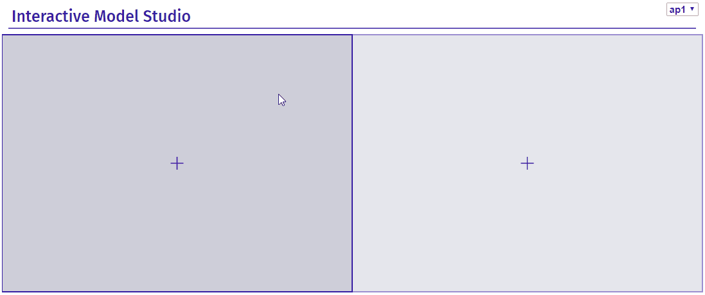
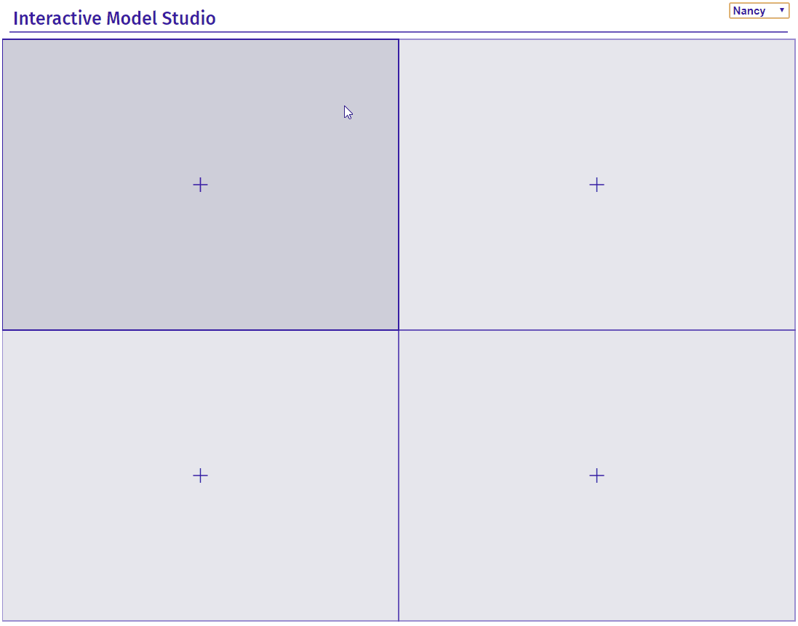

Overview
The dime package automates explanation of Machine Learning predictive models This package generates advanced interactive and animated model explanations in the form of serverless HTML site.
It combines R with D3.js to produce plots and descriptions for local and global explanations. The whole is greater than the sum of its parts, so it also supports EDA on top of that. ModelStudio is a fast and condensed way to get all the answers without much effort. Break down your model and look into its ingredients with only a few lines of code.
See a demo Read the vigniette: modelStudio - perks and features

The package dime is a part of the DrWhy.AI universe.
Installation
# Install the development version from GitHub:
# dependencies
devtools::install_github("ModelOriented/ingredients")
devtools::install_github("ModelOriented/iBreakDown")
# dime
devtools::install_github("ModelOriented/dime")Demo
This package bases on DALEX explainers created with DALEX::explain().
Create a model:
titanic_small <- titanic_imputed[, c(1,2,3,6,7,9)]
titanic_small$survived <- titanic_small$survived == "yes"
model_titanic_glm <- glm(survived ~ gender + age + fare + class + sibsp,
data = titanic_small, family = "binomial")Wrap it into an explainer:
explain_titanic_glm <- explain(model_titanic_glm,
data = titanic_small[,-6],
y = titanic_small[,6],
label = "glm")Pick some data points:
new_observations <- titanic_small[1:4,]
rownames(new_observations) <- c("Lucas", "James", "Thomas", "Nancy")Make a studio for the model:
More examples here.

Save
You can save modelStudio using controls on the top of the RStudio Viewer or with r2d3::save_d3_html() and r2d3::save_d3_png().